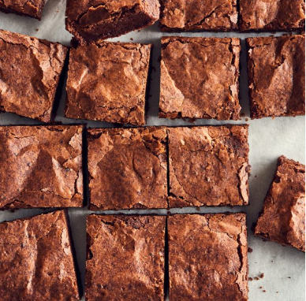
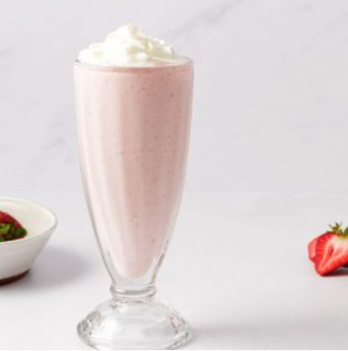
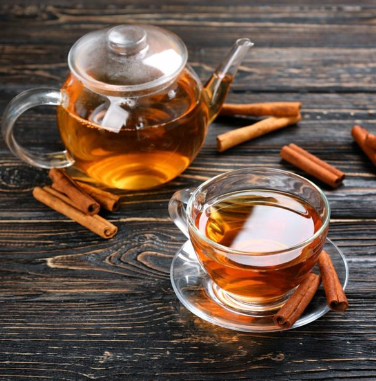
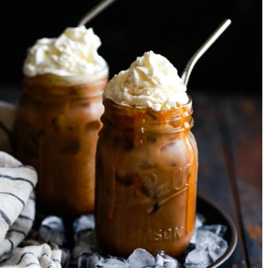
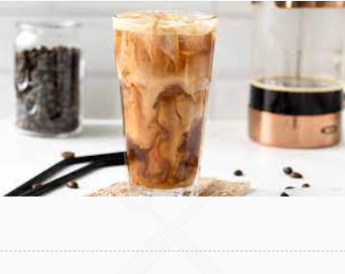

This double chocolate brownie ice cream is so rich and creamy! Chewy brownie batter throughout makes this…
Br240.00
X
This double chocolate brownie ice cream is so rich and creamy! Chewy brownie batter throughout makes this…
Br240.00
Brownies layered with chocolate chip ice cream and topped with crunchy chocolate granola bars. An irresistible combination!
Br140.00
Super fudgy brownies that taste like a combination of banana bread and chocolate brownies. These easy brownies are just 2 ingredients.
Br200.00
Indulge in pure chocolate bliss with our Dark Chocolate Cake. Moist, rich, and utterly irresistible,…
Br90.00
Decadent layers of almond sponge cake, coffee buttercream, and dark chocolate ganache harmonize in our…
Br90.00
Decadent layers of almond sponge cake, coffee buttercream, and dark chocolate ganache harmonize in our…
Br65.00
This dark chocolate vegan brownies recipe is ultra-rich, soft, fudgy, and decadent. It might just become…
Br60.00
A chocolate brownie, or simply a brownie, is a chocolate baked confection. Brownies come in…
Br65.00
These 100 % whole-grain, gluten-free brownies use teff flour to create a moist and fudge brownie that…
br65.00
Br65.00
Br75.00
Br75.00
Ice cream is a frozen dessert, typically made from milk or cream and flavoured with…
Br75.00
Chocolate cake or chocolate gâteau is a cake flavored with melted chocolate, cocoa powder, or…
Br90.00

A delicious, fasting but full of chocolate and super easy in making a sweet treat that…
Br65.00
Brownie Sundae is a fun dessert with classic flavors and toppings. What could be better than…
Br220.00
These espresso brownies are full of rich chocolate espresso flavor and chocolate chunks. They’re quick, simple and…
Br65.00
A pancake is a flat cake, often thin and round, prepared from a starch-based batter…
Br140.00
This vegan, gluten-free alternative to a traditional chechebsa is just want you need to get energized…
Br185.00
Chechebsa (sometimes called Kita Fir Fir in Ethiopia) is a classic breakfast dish that starts with…
Br165.00
Chechebsa (sometimes called Kita Fir Fir in Ethiopia) is a classic breakfast dish that starts with…
Br140.00
Fatira is a traditional Ethiopian street food item that is commonly consumed for breakfast, consisting…
Br170.00
Fatira is a traditional Ethiopian street food item that is commonly consumed for breakfast, consisting…
Br140.00
Fatira is a traditional Ethiopian street food item that is commonly consumed for breakfast, consisting…
Br140.00
Scrambled eggs is a dish made from eggs stirred, whipped, or beaten together typically with…
Br120.00
At the heart of an extraordinary egg sandwich is a creamy egg filling and essential…
Br110.00
This delicious and creamy banana juice recipe is made from ripe banana, apple, milk, and…
Br90.00
Strawberry juice is a sweet, nutritious, and refreshing drink made from just one ingredient
Br90.00
Pineapple juice is a liquid made by pressing the natural liquid from the pulp of…
Br90.00
Papaya, a tropical fruit, has a smooth texture and aromatic taste when ripe. Papaya juice…
Br90.00
This creamy dairy-free avocado smoothie is perfect for breakfast or a healthy snack!
Br90.00
This creamy dairy-free avocado smoothie is perfect for breakfast or a healthy snack!
Br120.00
Strawberry Milkshake is a delicious drink made with strawberries, milk, ice cream, and flavoring ingredients…
Br110.00
Chocolate Milkshake · Combine ice cream, milk, and 3 tablespoons* of the sauce in your blender…
Br110.00

Vanilla Milkshake, the world’s favorite milkshake, is a smooth and creamy concoction of vanilla ice…
Br110.00

Indulge in the exquisite fusion of coffee and chocolate with our Mocha Torta. Rich, velvety…
Br950.00
Unleash your taste buds with the Opera Torta. Layers of almond sponge cake, coffee-infused buttercream,…
Br950.00
Experience the epitome of chocolate indulgence with our Chocolate Torta. Decadently moist and intensely flavorful,…
Br950.00
Br750.00

Br750.00

honey, fresh orange and pineapple juice, ginger water, and a splash of black tea.
Br68.00
honey, fresh orange and pineapple juice, ginger water, and a splash of black tea.
Br40.00
Ginger tea is a herbal beverage that is made from ginger root. It has a…
Br40.00
Cinnamon tea is a herbal tea made by infusing cinnamon bark in water.
Br25.00
When you’re intermittent fasting, you may want to still get your caffeine kick. Here, registered dietitians…
Br110.00
Brew your espresso and let it cool to room temperature or cool down in an…
Br140.00
Cool off with a refreshing iced latte. This simple drink only needs a handful of ingredients…
Br90.00
Iced coffee is a coffee beverage served cold. It may be prepared either by brewing…
Br90.00
OR
Call Us: 09 77 78 95 45 / 09 77 78 98 ..